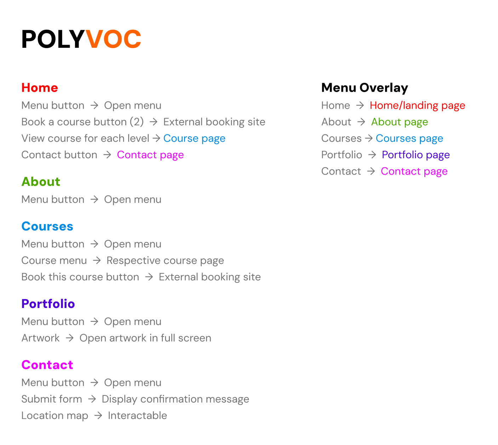
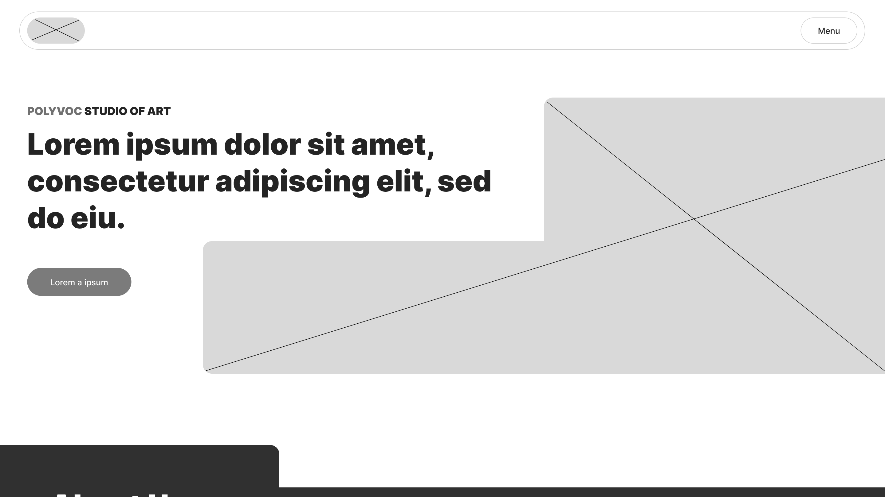
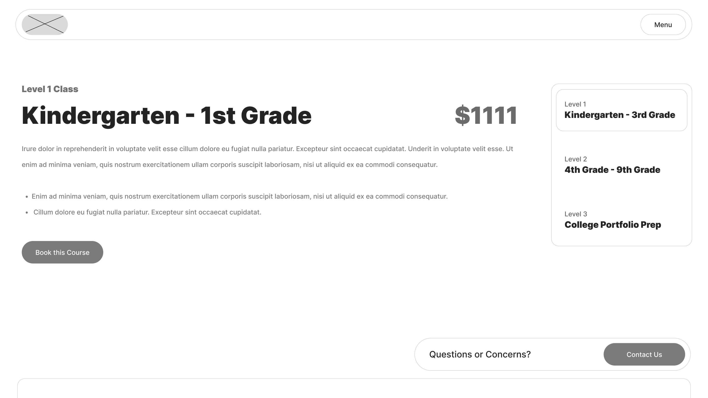
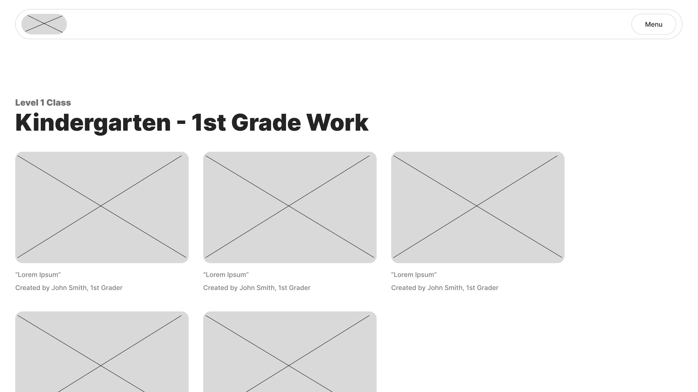
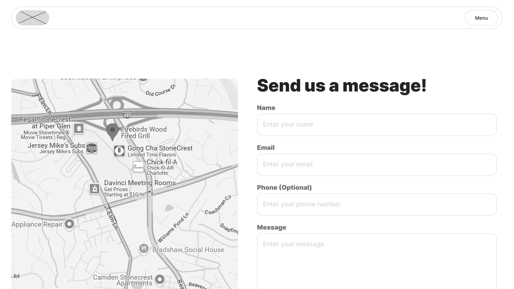
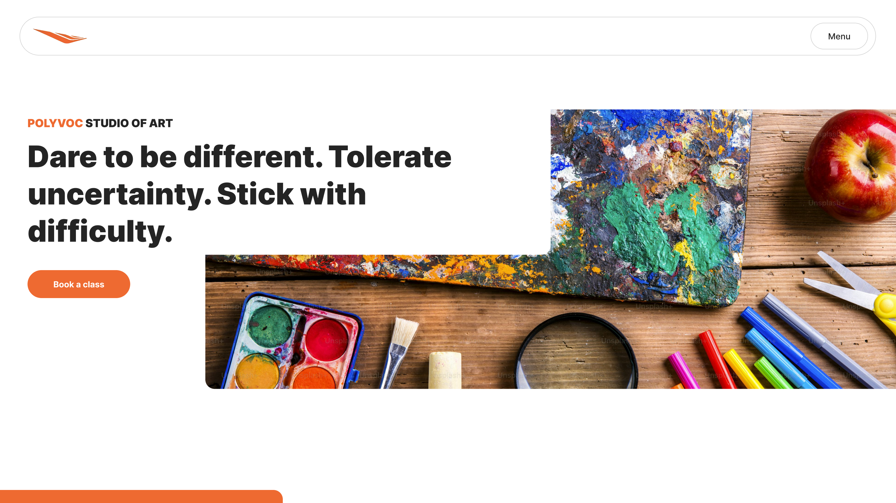
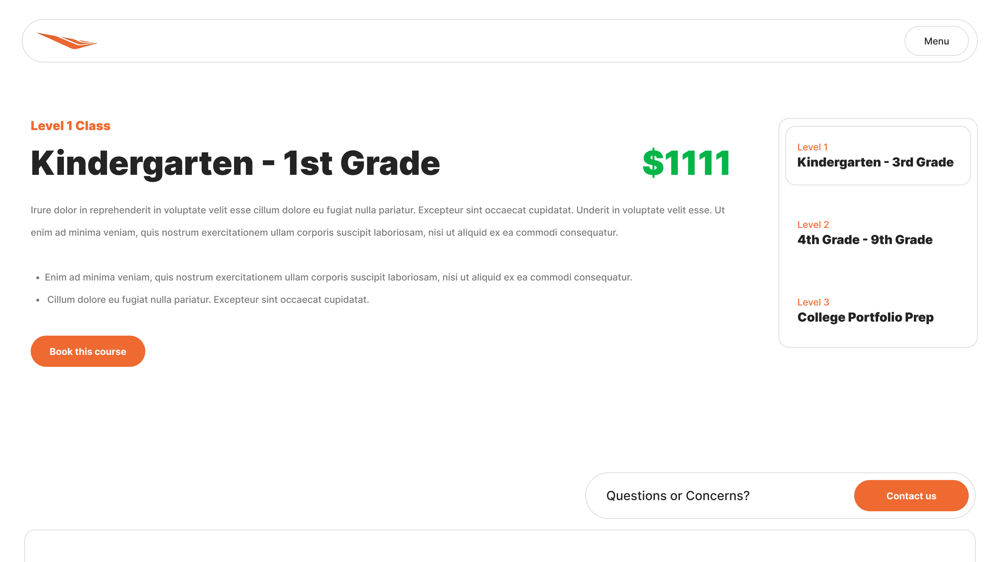
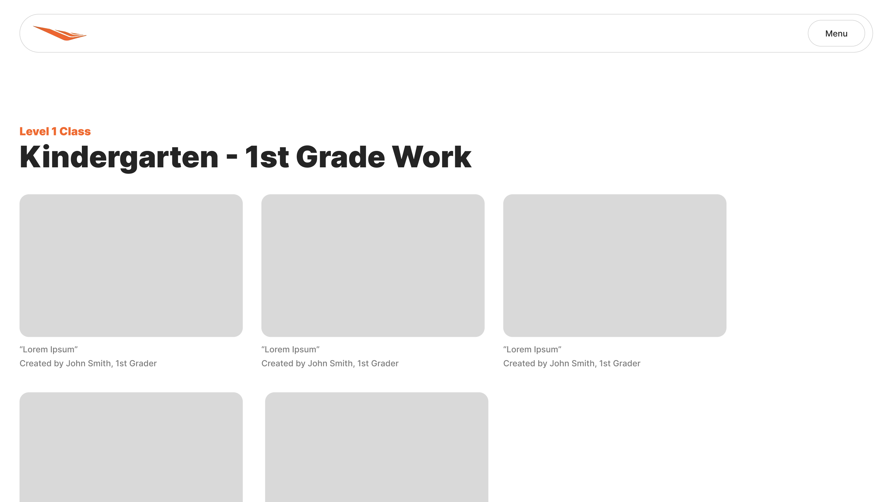
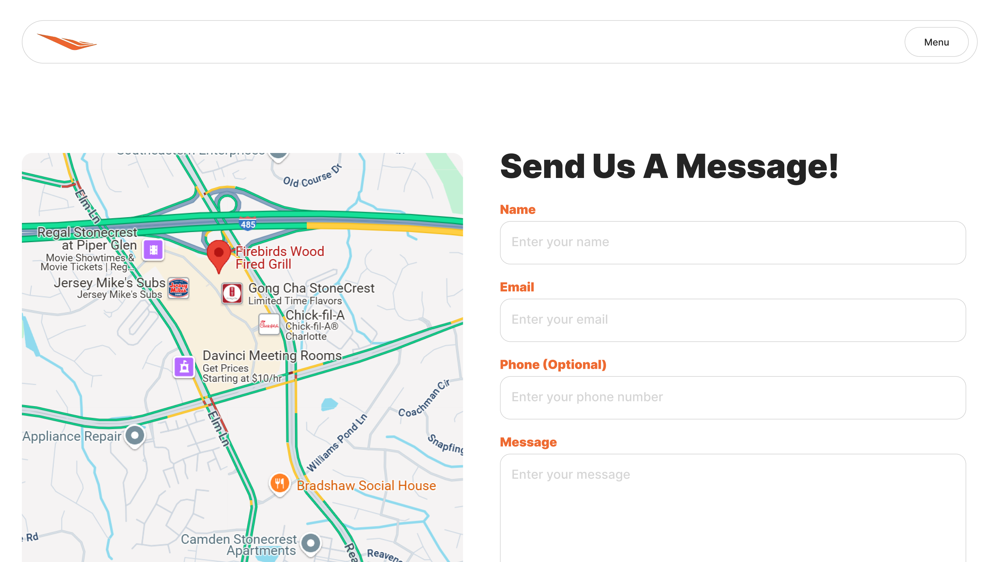

Please open this site on desktop.
Mobile responsiveness is currently in development.
Polyvoc
A company website built for a client that runs a studio art class business for K - 12 students.
PROJECT OVERVIEW
Polyvoc is the name of the company and website designed and developed for a client that runs an art teaching studio for elementary to high school students in New York City. The website would provide a way for students or parents to access information about courses and to book courses, establishing their online presence. I conducted end-to-end UX research and design, and developed the website using HTML, CSS, and JavaScript.
Goal : Provide students and parents looking for art classes in New York City a way to book courses online. Also have a one-stop shop for all of the information about the business and the services provided.
This project was conducted under the website design business I run, called Fluorescence Design LLC.
ROLE
Solo UX Designer, Web Developer
TIMELINE
June - July 2025 (1 month)
TOOLS
Google Forms, Google Sheets, Figma, Visual Studio Code
Competitive Analysis
- Many other education art studio websites had confusing elements, such as a cluttered UI in some places or broken or overwhelming amount of links.
- On several of the websites, it was difficult to find where to book classes, or required too many clicks to reach the booking page.
However, almost every education art studio website had a fairly simple UI, even if there were places that were harder to read.
User Research
Surveys were sent out to students and parents. Many of the respondents reported needing a way to verify class quality and check prices. They also expressed that a lack of professionality, poor design, and ads can make them distrust a tutor’s website.
These user personas were created based on their responses.
Page Layout
The page layout draft was formed through what the client wanted to put on the website, as well as communication surrounding competitors’ websites pages. Additional sections were also added after user interviews and surveys.
HOME
- Landing section
- Slogan or Polyvoc logo
- Short catchphrase
- Book a course button
- About section
- Description of Polyvoc
- Mission statement
- Courses section
- General description (and maybe instructions on how to book a course)
- Individual course
- Title + Level
- Short description
- Price
- Brief description of each course + image
- Button that takes you to the courses pages for each level
- Portfolio Section
- Testimonials section
- 2 - 3 testimonials/reviews
- Call-to-action section
- Book a course button
- Contact button that takes you to the contact page
COURSES
- Side menu bar for different grades/modes
- Course image
- Course Title
- Course description
- Button or link to book the course
PORTFOLIO
- Separated by grade level (K - 3rd, 4th - 9th, college portfolio)
- Each artwork
- Title, description
CONTACT
- Contact form
- Name
- Email
- Phone (Optional)
- Message
- Location
- Location map
Information Architecture
Based on the page layout and features, I made an information architecture map to show the links to different pages.
Wireframes
Home
Courses
Portfolio
Contact
Style Guide +
Components
After communicating with the client and getting the wireframe layouts approved, I created a style guide and some components for the final design, which I showed to the client as well.
High-Fidelity Prototypes
Home
Courses
Portfolio
Contact
Results
- Communicated with a client that runs a business throughout the whole process of research, design, and development of a desktop website from scratch
- The Polyvoc website provided a hub for parents and students to find information about booking art classes
- Being able to book courses without needing to directly contact an employee at Polyvoc, and providing booking buttons across the site increased the number of clients and conversion rates
- After the website’s development, clients jumped from about 50 students to NUMBER from TIME FRAME
Reflection
- This project helped build on my understanding of clarity and flexibility in design. Having two very different audiences with students and parents, I had to be intentional with the surveys and feedback they provided, ensuring that I think very carefully about how I presented information and how easy it was to reach the call-to-action.
- If time allowed, I would have conducted in-person interviews with both parents and students in New York City to help get a real sense of their issues with existing booking class sites, and what their expectations were.
- Designing and developing Polyvoc’s website showed how many factors go into designing for a business with actual needs and goals. I realized how important it was to capture the personality of the company and build trust with a user quickly to prevent negative perceptions of the business and, at the same time, lead them to take the next step, like signing up for a class.